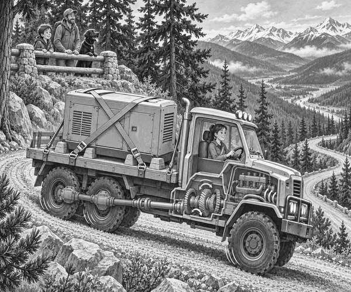

A storm had stopped the valley radio.
The rescue station needed a new generator.
Driver Mia brought her six-wheel truck.
The generator was large and heavy.
Workers set it on strong timber blocks.
They pulled four thick straps across it.
Mia checked every hook.
She tugged every strap.
The load did not move.
Tom and Scout waited in the escort 4x4.
Together, the trucks climbed to Black Pine Pass.
Snow sat beneath the dark trees.
At the top, the road dropped towards the valley.
A sign showed a steep hill.
“Ten per cent,” Tom read.
Hill fact: A ten per cent downhill sign means the road drops about ten metres for every one hundred metres forwards.
Tom looked at the heavy generator.
“Will it push the truck downhill?” he asked.
“It will try,” said Mia.
She stopped on the level ground before the slope.
First, she checked the straps again.
Next, she tested the brakes.
Then she selected a low gear.
“Why choose it now?” asked Tom over the radio.
“Because I want the right gear before the hill begins,” said Mia.
The truck rolled onto the slope.
Mia lifted her foot from the pedal.
The wheels turned the gears.
The gears turned the engine.
The deep engine went Rrrr-rrrr-rrrr.
It helped to hold the truck back.
“That is engine braking,” said Mia.
The first bend curled around a tall pine.
Mia gave the brake pedal one firm, gentle press.
The truck slowed.
Then she released it.
The low gear kept working.
Rrrr-rrrr-rrrr.
The generator stayed still.
The straps stayed tight.
Tom and Scout followed far behind.
At the second bend, mist covered the road.
Mia slowed even more.
She did not coast in neutral.
She kept the low gear joined to the engine.
Driving fact: A driver should choose a lower gear before a long downhill slope. Coasting in neutral removes engine braking, so speed can rise quickly and the footbrakes must work harder.
At last, the road became flat.
Mia stopped in the station yard.
The generator had not slipped at all.
Workers lifted it into the radio hut.
Soon the new engine began to hum.
A voice crackled from the radio.
“Black Pine Station is back!”
Tom cheered.
Scout barked at the speaker.
Mia looked up at the long mountain road.
“The truck carried the generator,” she said.
“And the low gear carried us safely down.”